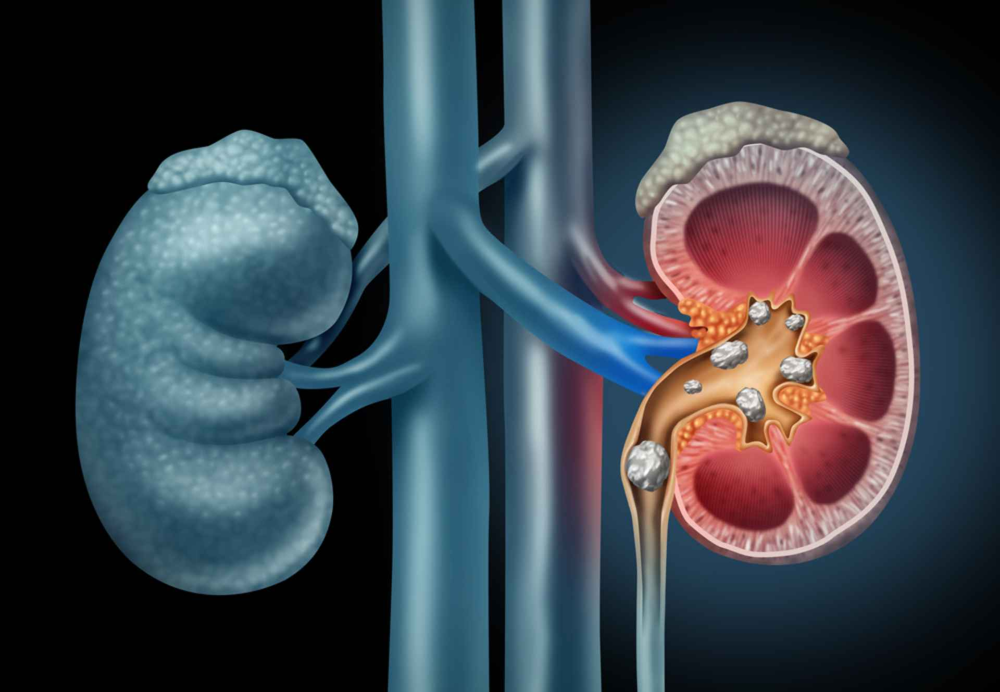

Project: Capstone Project

Capstone Project is completely designed using Front-End Technologies.
It's main purpose is to showcase the educational qualifications
and skills of mine.
Project: Detection of CKD using ML methods
This project aims to develop a predictive model to detect Chronic Kidney Disease early using ML methodologies, and then helping the health-care professionals to diagnose through early intervention.